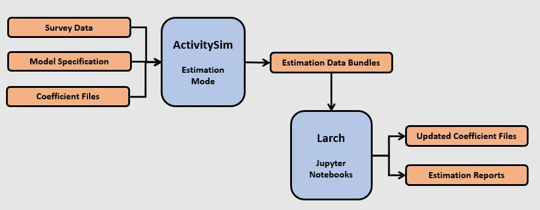

Estimation#
ActivitySim includes the ability to re-estimate submodels using choice model estimation tools such as larch. To do so, ActivitySim adopts the concept of an estimation data bundle (EDB), which is a collection of the necessary data to re-estimate a submodel. For example, for the auto ownership submodel, the EDB consists of the following files:
model settings - the auto_ownership_model_settings.yaml file
coefficients - the auto_ownership_coefficients.csv file with each coefficient name, value, and constrain set to True or False if the coefficient is estimatable
utilities specification - the auto_ownership_SPEC.csv utility expressions file
chooser and alternatives data - the auto_ownership_values_combined.csv file with all chooser and alternatives data such as household information, land use information, and the utility data components for each alternative
ActivitySim also includes Jupyter Estimation Notebooks for estimating submodels with larch, as well as an activitysim.estimation.larch submodule that transforms EDBs into larch models. Additional estimation software translators can be added later if desired.
The combination of writing an EDB for a submodel + a larch estimation notebook means users can easily re-estimate submodels. This combination of functionality means:
There is no duplication of model specifications. ActivitySim owns the specification and larch pivots off of it. Users code model specifications and utility expressions in ActivitySim so as to facilitate ease of use and eliminate inconsistencies and errors between the code used to estimate the models and the code used to apply the models.
The EDB includes all the data and model structure information and the
activitysim.estimation.larchsubmodule used by the example notebooks transforms the EDB to larch’s data model for estimation.Users are able to add zones, alternatives, new chooser data, new taz data, new modes, new coefficients, revise utilities, and revise nesting structures in ActivitySim and larch responds accordingly.
Eventually it may be desirable for ActivitySim to automatically write larch estimators (or other types of estimators), but for now the integration is loosely coupled rather than tightly coupled in order to provide flexibility.
Workflow#
The general workflow for estimating models is shown in the following figures and explained in more detail below.
The user converts their household travel survey into ActivitySim format households, persons, tours, joint tour participants, and trip tables. The households and persons tables must have the same fields as the synthetic population input tables since the surveyed households and persons will be run through the same set of submodels as the simulated households and persons.
The ActivitySim estimation example
scripts\infer.pymodule reads the ActivitySim format household travel survey files and checks for inconsistencies in the input tables versus the model design + calculates additional fields such as the household joint tour frequency based on the trips and joint tour participants table. Survey households and persons observed choices much match the model design (i.e. a person cannot have more work tours than the model allows).ActivitySim is then run in estimation mode to read the ActivitySim format household travel survey files, run the ActivitySim submodels to write estimation data bundles (EDB) that contains the model utility specifications, coefficients, chooser data, and alternatives data for each submodel. Estimation mode runs single-processed and without destination sampling.
The relevant EDBs are read and transformed into the format required by the model estimation tool (i.e. larch) and then the coefficients are re-estimated. The
activitysim.estimation.larchlibrary is included for integration with larch and there is a Jupyter Notebook estimation example for each core submodel. No changes to the model specification are made in the process.The user can then update the ActivitySim model coefficients file(s) for the estimated submodel and re-run the model in simulation mode. The user may want to use the restartable pipeline feature of ActivitySim to just run the submodel of interest.

Example#
Note
The estimation_mode.ipynb Jupyter Estimation Notebooks also introduces estimation mode and walks the user through the process.
To run the estimation example, do the following:
Activate the correct conda environment if needed
Create a local copy of the estimation example folder
activitysim create -e example_estimation_sf -d test_example_estimation_sf
Run the example
cd test_example_estimation_sf
activitysim run -c configs_estimation/configs -c configs -o output -d data_sf
ActivitySim should log some information and write outputs to the output folder, including EDBs for each submodel. The estimation example runs for about 15 minutes and writes EDBs for 2000 households.
Open Estimation Notebooks for a specific submodel and then step through the notebook to re-estimate the sub-model.
The estimation example assumes the machine has sufficient RAM to run with chunking disabled (chunk_training_mode: disabled). See Chunk for more information.
Settings#
Additional settings for running ActivitySim in estimation mode are specified in the estimation.yaml file. The settings are:
enable- enable estimation, either True or Falsebundles- the list of submodels for which to write EDBssurvey_tables- the list of input ActivitySim format survey tables with observed choices to override model simulation choices in order to write EDBs. These tables are the output of thescripts\infer.pyscript that pre-processes the ActivitySim format household travel survey files for the example data and submodels
Estimation Notebooks#
ActivitySim includes a Jupyter Notebook recipe book with interactive re-estimation examples for each estimatable submodel. To run a Jupyter notebook, do the following:
Open a conda prompt and activate the conda environment with ActivitySim installed
If needed,
conda install jupyterlabso you can run jupyter notebooksType
jupyter notebookto launch the web-based notebook managerNavigate to the
examples/examples_estimaton/notebooksfolder and select a notebook from the table belowSave the updated coefficient file(s) to the configs folder and run the model in simulation mode
Example |
Notebook |
|---|---|
Estimation mode overview |
|
School location |
|
Work location |
|
Auto ownership |
|
Free parking |
|
CDAP |
|
Mandatory tour frequency |
|
Work tour scheduling |
|
School tour scheduling |
|
Joint tour frequency |
|
Jointatory tour composition |
|
Jointatory tour participation |
|
Joint nonmandatory tour destination |
|
Joint tour scheduling |
|
Non mandatory tour frequency |
|
Non mandatory tour scheduling |
|
Tour mode choice |
|
Atwork subtour frequency |
|
Atwork subtour destination |
|
Atwork subtour scheduling |
|
Stop frequency |
|
Trip destination |
|
Trip mode choice |
General API#
- activitysim.estimation.larch.general.apply_coef_template(linear_utility, template_col, condition=None)#
Apply a coefficient template over a linear utility function.
- Parameters
- linear_utilityLinearFunction_C
- template_colMapping
- conditionany
- Returns
- LinearFunction_C
- activitysim.estimation.larch.general.apply_coefficients(coefficients, model, minimum=None, maximum=None)#
Read the coefficients CSV file to a DataFrame and set model parameters.
- Parameters
- coefficientspandas.DataFrame
The coefficients table in the ActivitySim data bundle for this model.
- modelModel
Apply coefficient values and constraints to this model.
- activitysim.estimation.larch.general.clean_values(values, choice_col='override_choice', alt_names_to_codes=None, choice_code='override_choice_code')#
- Parameters
- valuespd.DataFrame
- alt_namesCollection
- override_choicestr
The columns of values containing the observed choices.
- alt_names_to_codesMapping, optional
If the override_choice column contains alternative names, use this mapping to convert the names into alternative code numbers.
- choice_codestr, default ‘override_choice_code’
The name of the observed choice code number column that will be added to values.
- Returns
- pd.DataFrame
- activitysim.estimation.larch.general.construct_nesting_tree(alternatives, nesting_settings)#
Construct a NestingTree from ActivitySim settings.
- Parameters
- alternativesMapping or Sequence
If given as a Mapping (dict), the keys are the alternative names as strings, and the values are alternative code numbers to use in larch. If given as a Sequence, the values are the alternative names, and unique sequential codes will be created starting from 1.
- nesting_settingsMapping
The ‘NESTS’ section of the ActivitySim config file.
- Returns
- NestingTree
- activitysim.estimation.larch.general.cv_to_ca(alt_values, dtype='float64', required_labels=None)#
Convert a choosers-variables DataFrame to an idca DataFrame.
- Parameters
- alt_valuespandas.DataFrame
This DataFrame should be in choosers-variables format, with one row per chooser and variable, and one column per alternative. The id’s for the choosers and variables must be in that order, in a two-level MultiIndex.
- dtypedtype
Convert the incoming data to this type. Set to None to skip data conversion.
- required_labelsCollection, optional
If given, any columns in the output that are not required will be pre-emptively dropped.
- Returns
- pandas.DataFrame
The resulting DataFrame is transformed into Larch’s idca format, with one row per chooser (case) and alternative, and one column per variable.
- activitysim.estimation.larch.general.dict_of_linear_utility_from_spec(spec, x_col, p_col, ignore_x=())#
Create a linear function from a spec DataFrame.
- Parameters
- specpandas.DataFrame
A spec for an ActivitySim model.
- x_col: str
The name of the columns in spec representing the data.
- p_col: dict
The name of the columns in spec representing the parameters. The keys give the names of the columns to use, and the values will become the keys of the output dictionary.
- ignore_xCollection, optional
Labels in the spec file to ignore. Typically this includes variables that are pre-processed by ActivitySim and therefore don’t need to be made available in Larch.
- segment_idstr, optional
The CHOOSER_SEGMENT_COLUMN_NAME identified for ActivitySim. This value is ignored if p_col is a string, and required if p_col is a dict.
- Returns
- dict
- activitysim.estimation.larch.general.explicit_value_parameters(model)#
Define and lock parameters given as fixed values.
- Parameters
- modellarch.Model
The model to insert fixed value parameters.
- Returns
- activitysim.estimation.larch.general.explicit_value_parameters_from_spec(spec, p_col, model)#
Define and lock parameters given as fixed values in the spec.
- Parameters
- specpandas.DataFrame
A spec for an ActivitySim model.
- p_colstr or dict
The name of the columns in spec representing the parameters. Give as a string for a single column, or as a dict to have segments on multiple columns. If given as a dict, the keys give the names of the columns to use, and the values give the identifiers that will need to match the loaded segment_id value. Only the keys are used in this function.
- modellarch.Model
The model to insert fixed value parameters.
- Returns
- activitysim.estimation.larch.general.linear_utility_from_spec(spec, x_col, p_col, ignore_x=(), segment_id=None)#
Create a linear function from a spec DataFrame.
- Parameters
- specpandas.DataFrame
A spec for an ActivitySim model.
- x_col: str
The name of the columns in spec representing the data.
- p_col: str or dict
The name of the columns in spec representing the parameters. Give as a string for a single column, or as a dict to have segments on multiple columns. If given as a dict, the keys give the names of the columns to use, and the values give the identifiers that will need to match the loaded segment_id value.
- ignore_xCollection, optional
Labels in the spec file to ignore. Typically this includes variables that are pre-processed by ActivitySim and therefore don’t need to be made available in Larch.
- segment_idstr, optional
The CHOOSER_SEGMENT_COLUMN_NAME identified for ActivitySim. This value is ignored if p_col is a string, and required if p_col is a dict.
- Returns
- LinearFunction_C
- activitysim.estimation.larch.general.prevent_overlapping_column_names(x_ca, x_co)#
Rename columns in idca data to prevent overlapping names.
- Parameters
- x_ca, x_copandas.DataFrame
The idca and idco data, respectively
- Returns
- x_ca, x_co
- activitysim.estimation.larch.general.remove_apostrophes(df, from_columns=None)#
Remove apostrophes from columns names and from data in given columns.
Also strips leading and trailing whitespace.
This function operates in-place on DataFrames.
- Parameters
- dfpandas.DataFrame
- from_columnsCollection, optional
- Returns
- pandas.DataFrame
- activitysim.estimation.larch.simple_simulate.construct_availability(model, chooser_data, alt_codes_to_names)#
Construct an availability dataframe based on -999 parameters.
- Parameters
- modellarch.Model
- chooser_datapandas.DataFrame
- alt_codes_to_namesMapping[int,str]
- Returns
- pandas.DataFrame
Models API#
- activitysim.estimation.larch.cdap.apply_replacements(expression, prefix, tokens)#
Convert general person terms to specific person terms for the CDAP model.
- Parameters
- expressionstr
An expression from the “Expression” column of cdap_INDIV_AND_HHSIZE1_SPEC.csv, or similar.
- prefixstr
A prefix to attach to each token in expression.
- tokenslist-like of str
A list of tokens to edit within an expression.
- Returns
- expressionstr
The modified expression
- activitysim.estimation.larch.cdap.cdap_base_utility_by_person(model, n_persons, spec, alts=None, value_tokens=())#
Build the base utility by person for each pattern.
- Parameters
- modellarch.Model
- n_personsint
- specpandas.DataFrame
The base utility by person spec provided by the ActivitySim framework.
- altsdict, optional
The keys are the names of the patterns, and the values are the alternative code numbers, as created by generate_alternatives. If not given, the alts are automatically regenerated using that function.
- value_tokenslist-like of str, optional
A list of tokens to edit within an the expressions, generally the column names of the provided values from the estimation data bundle. Only used when n_persons is more than 1.
- activitysim.estimation.larch.cdap.generate_alternatives(n_persons)#
Generate a dictionary of CDAP alternatives.
The keys are the names of the patterns, and the values are the alternative code numbers.
- Parameters
- n_personsint
- Returns
- Dict
- activitysim.estimation.larch.cdap.interact_pattern(n_persons, select_persons, tag)#
Compile a regex pattern to match CDAP alternatives.
- Parameters
- n_personsint
- select_personslist-like of int
The persons to be selected.
- tagstr
The activity letter, currently one of {M,N,H}.
- Returns
- re.compile
- activitysim.estimation.larch.nonmand_tour_freq.nonmand_tour_freq_model(edb_directory='output/estimation_data_bundle/{name}/', return_data=False, condense_parameters=False)#
Prepare nonmandatory tour frequency models for estimation.
- Parameters
- edb_directorystr
Location of estimation data bundle for these models.
- return_databool, default False
Whether to return the data used in preparing this function. If returned, data is a dict in the second return value.
- condense_parametersbool, default False
Apply a transformation whereby all parameters in each model that have the same initial value are converted to have the same name (and thus to be the same parameter, used in various places).
- activitysim.estimation.larch.scheduling.construct_availability_ca(model, chooser_data, alt_codes_to_names)#
Construct an availability dataframe based on -999 parameters.
- Parameters
- modellarch.Model
- chooser_datapandas.DataFrame
- alt_codes_to_namesMapping[int,str]
- Returns
- pandas.DataFrame